If you are looking to do some filming in Lisbon, here are our favourite Lisbon filming locations. This guide will cover why it's such a fab place to film, think amazing light bouncing off the the bright stone streets, relaxed residents grabbing a quick espresso (bica), beautiful locations and not so huge that it takes you too long to get from place to place. It also covers what to watch out for like having to lug equipment up the many hills and quite a lot of tourists. I've also added in my favourite locations to film and some I want to check out in the future.
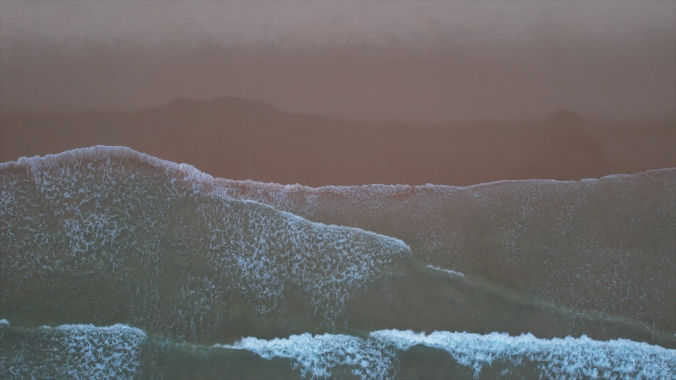
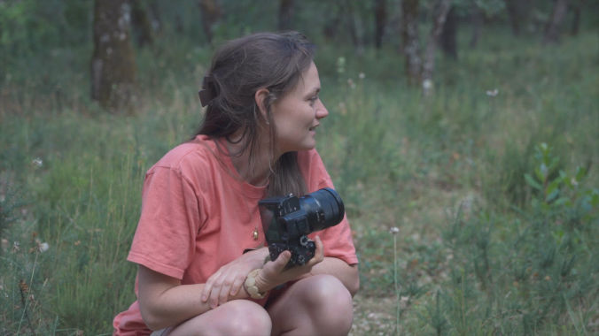
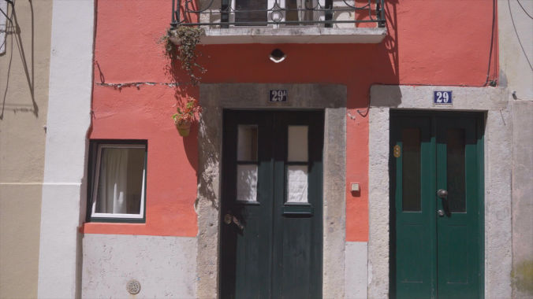
Lisbon is one of those places that already feels like a film.
Beautiful!
Everywhere you look there’s something beautiful to see. The city is full of colorful buildings, amazing hand-painted ceramic tiles (azulejos), old streets, and beautiful views. It’s also one of the safest cities in the world as well.
Laid Back and Chill
People in Lisbon are laid back, grabbing a quick espresso (bica) at a café or sitting at a viewpoint (miradouro) to watch the sun go down isn’t something you only do on holiday, it’s part of the everyday.
Not Massive, So It's Easy To Get Around
In huge cities like London or Paris, you can spend hours stuck in traffic trying to move from one filming location to another. In Lisbon, you can film a city scene in the morning and be on a wild beach or beautiful coastline just a short drive away in the afternoon.
Amazing Light
Photographers and filmmakers love Lisbon because the city has a special glow. The sunlight reflects off the bright stone streets (calçada portuguesa) and creates a soft, beautiful look that makes everything feel cinematic.
Looking for a Local Video Creator?
If you are searching for a camera operator or team on the ground, check out our Lisbon Video Services.
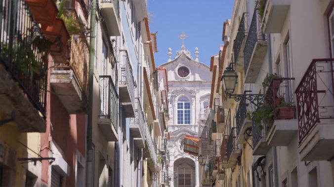
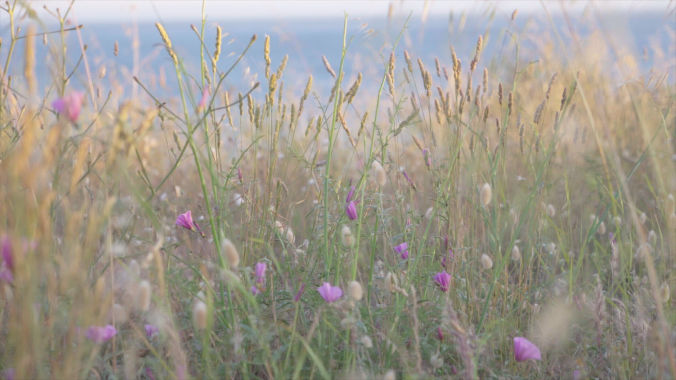
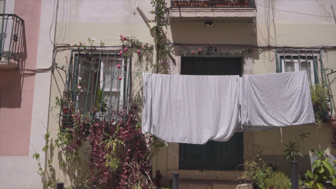
Of course, filming in Lisbon isn’t always easy. The city is famous for its beautiful hills, but those hills can also be a challenge. Carrying all your camera equipment up steep streets, especially on the famous slippery cobblestones, can be tricky. Finding parking can also be difficult, especially in the older parts of the city where streets are narrow and busy.
The sunshine in Lisbon is amazing, but it can also create challenges when filming. When the sun is directly overhead in the middle of the day, it can create strong shadows. However the tall buildings and narrow streets create natural shade, which can give filmmakers softer and more flattering light.
Some areas of Lisbon can get quite busy and noisy in summer as it's such a popular destination with tourists, but it's easy to get around and you don't need to be just going to those super popular spots.
One of the biggest lessons about filming in Lisbon is that you have to be flexible. A location that looked perfect during planning might change when you arrive. There could be scaffolding covering a beautiful building, a local festival filling the streets with people, or something happening that completely changes the feeling of a place.
But that’s what makes filming in a real city fun. Sometimes the unexpected moments, the things you didn't plan for, end up creating the best shots.
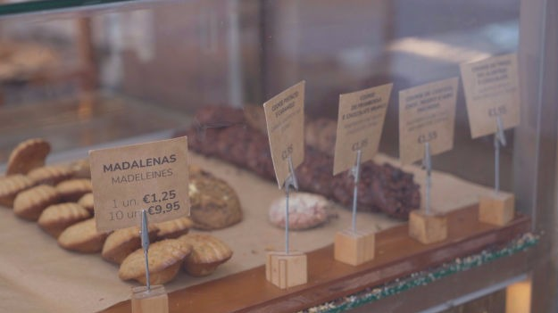
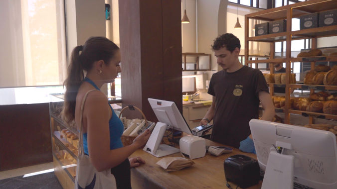
Here are some places in Lisbon I’ve already filmed and some that are on my list to wander around next.
Gardens & Nature
Lisbon has some amazing natural spaces that offer a completely different side of the city. Places like Jardim da Estrela and Estufa Fria feel like peaceful escapes from the busy streets, with beautiful plants, unique architecture, and lots of opportunities for cinematic shots. Outside the city, Serra da Arrábida Natural Park offers mountains, forests, and some of Portugal’s most beautiful coastline.
Craftsmanship, Design & Independent Brands
One of my favorite things about Lisbon is the connection between the city and traditional craftsmanship. Places like Companhia Portugueza do Chá, A Vida Portuguesa, and Cerâmica da Linha show the care and creativity behind Portuguese design from handmade ceramics to beautifully packaged local products. The antique stalls at Feira da Ladra and the shops around the São Bento Antique Strip are full of stories and unique details. Places like Depozito also capture Lisbon’s more modern creative side, where independent brands and designers are creating something new while still respecting the past.
Coastline & Ocean Light
Lisbon’s relationship with the ocean is a huge part of its identity. The coastline around the city creates some of the most dramatic filming locations, especially when the light hits the water around sunrise and sunset. Places like Costa da Caparica, Praia do Guincho, and Praia dos Galapinhos offer completely different moods, from wide sandy beaches and surfers to wild cliffs and peaceful hidden coves.
Food, Culture & Everyday Life
Some of the most cinematic moments in Lisbon are often the simplest ones. A café opening early in the morning. A shopkeeper preparing for the day. A local market coming alive. Markets are another window into everyday life. The Saturday Organic Farmers Market at Campo Pequeno, Mercado de Alvalade, Mercado 31 de Janeiro, and Mercado de Arroios each show a different side of the city, from local producers and traditional neighborhood life to fresh seafood.
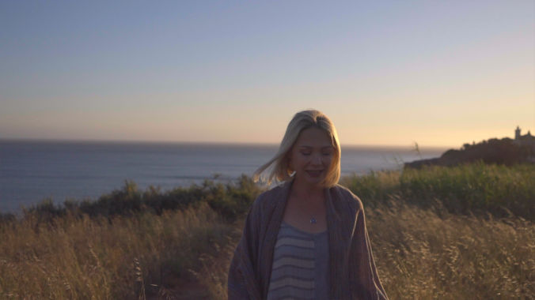
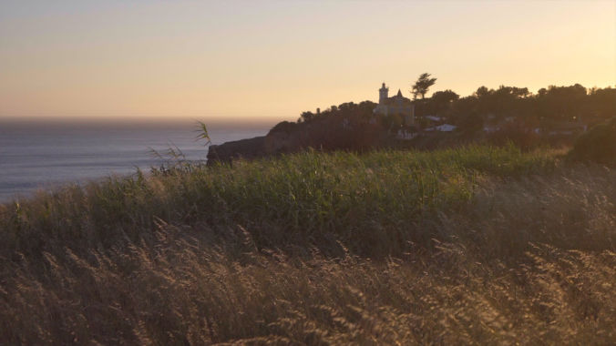
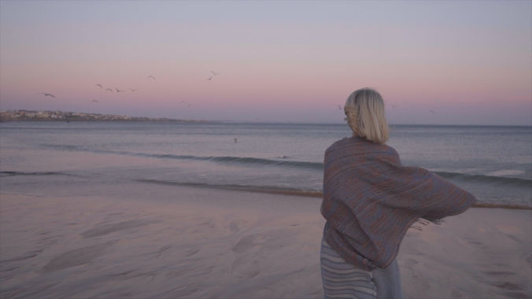
Filming in Lisbon is generally a smooth experience, but like any city, there are rules to follow. Small, simple setups using a phone or handheld camera in public spaces are usually easy to manage, but larger productions with crews, lighting, vehicles, or equipment that affects public areas requires permits or permission from local authorities. The same applies to drones, Lisbon’s rooftops, coastline, and viewpoints look incredible from above, but drone flights are regulated under European rules. Before flying, it’s important to check restricted areas, especially around the airport, government buildings, crowded areas, and protected locations.
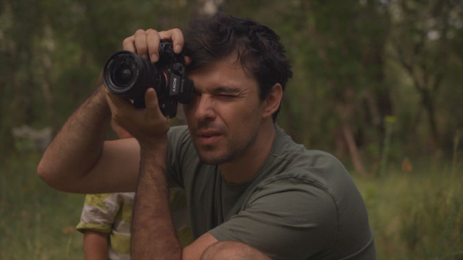
If you are planning a brand film, travel story, or creative project and want an experienced team on the ground to handle the planning and filming, head over to our Lisbon Video Services to check out our portfolio and get in touch.
katy@munjiri.com